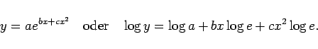
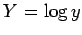

Inhalt Index DeskTop Bronstein

 Funktionen und ihre Darstellung Aufstellung empirischer Kurven Gebräuchlichste empirische Formeln
Funktionen und ihre Darstellung Aufstellung empirischer Kurven Gebräuchlichste empirische Formeln


|  | (2.251) |
In der folgenden Abbildung sind mehrere Kurvenverläufe dieser Funktion dargestellt.
Die Diskussion der Funktion erfolgte im Abschnitt verallgemeinerte GAUSSsche Glockenkurve (s. Gleichung (2.61)).
Die Einführung der neuen Variablen  ermöglicht die Zurückführung auf den Fall des Quadratischen Polynoms.